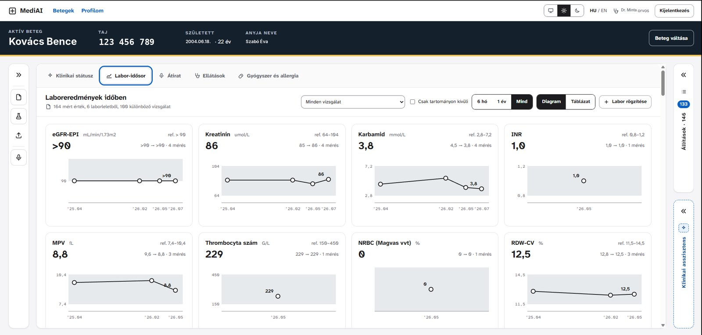
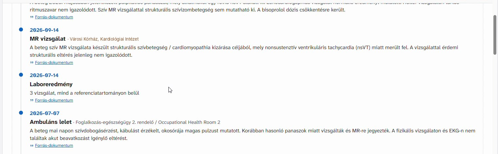

Das vollständige Patientenbild und aktuelle Forschung, griffbereit.
In wenigen Minuten ein klares Bild des Patienten, patientenbezogene Fachliteratur mit einem Klick und hinter jeder Aussage die Quelle.

Verstreute klinische Daten,
knappe ärztliche Zeit
Die Vorgeschichte eines Patienten ist verstreut: Ambulanzbefunde, Laborbefunde, Entlassungsbriefe und Medikationslisten, oft aus mehreren Einrichtungen. Ärztinnen und Ärzten bleiben nur Minuten, um alles zu überblicken und verantwortungsvoll zu entscheiden.
Das Gesamtbild in Minuten
Das System führt alle Dokumente des Patienten zusammen und zeigt den aktuellen Zustand sofort übersichtlich.
Wissen, auf den Patienten zugeschnitten
Aktuelle, relevante Publikationen zum konkreten Krankheitsbild mit einem Klick, samt Begründung.
Vertrauen und Sicherheit
Jede Aussage ist bis zur Quelle nachvollziehbar, und Patientendaten verlassen die Einrichtung nicht.
¹ Sinsky C. et al.: Allocation of Physician Time in Ambulatory Practice. Annals of Internal Medicine, 2016. ² Del Fiol G. et al.: Clinical questions raised by clinicians at the point of care. JAMA Internal Medicine, 2014.
Ein System für den gesamten Behandlungsweg
MediAI Assistant unterstützt jeden Schritt der ärztlichen Arbeit, von der Befundsichtung bis zum Entlassungsbrief.
Einheitliches Patientenbild
Alle Befunde an einem Ort, automatisch erkannt und geordnet.
Labor und Medikation
Verläufe, pathologische Werte und Warnungen zu Wechselwirkungen.
Klinischer Status
Verständliche Zusammenfassung und proaktive Untersuchungsvorschläge.
Klinischer Assistent
Freie Fragen zum Patienten: Die KI antwortet auf Basis seiner Dokumente, jede Antwort mit Quellenangabe.
Literaturrecherche
Aktuelle Publikationen zum Patienten, mit Begründung ihrer Relevanz.
Sprachbasierte Dokumentation
Strukturierte Dokumentation automatisch aus dem Patientengespräch.
Ultraschallbefundung
Echokardiographie-Diktat während der Untersuchung, mit geprüften Messwerten.
Anamnese und Entlassungsbrief
Mit einem Klick, bearbeitbar und exportierbar.
All dies läuft vollständig auf dem eigenen Server der Einrichtung, mit mehreren medizinisch feinabgestimmten KI-Modellen, ohne externen KI-Anbieter und ohne tokenbasierte Gebühren.
Die vollständige Anamnese sofort im Überblick
Befunde lassen sich einfach importieren. MediAI Assistant erkennt und kategorisiert die Dokumente, extrahiert die Daten und bewertet den gesamten Patienten neu.
- Laborverlauf: Verläufe sind sofort erfassbar, pathologische Werte hervorgehoben.
- Wechselwirkungen: regelbasierte Warnungen nach Schweregrad aus einer öffentlichen Arzneimitteldatenbank, inklusive Hinweis, was nicht geprüft werden konnte.
- Klinischer Status: verständliche Zusammenfassung mit kritischen Warnungen und proaktiven Untersuchungsvorschlägen.

Jede Aussage mit ihrer Quelle
MediAI Assistant ist keine Blackbox. Die KI analysiert, Prüfung und Entscheidung bleiben immer ärztlich.
- Ein Klick zur Quelle: Das Originaldokument öffnet sich mit hervorgehobener Zeile oder Textstelle.
- Drei klar getrennte Aussagearten: regelbasierte Warnung, wörtliches Quellenzitat und KI-Schlussfolgerung mit Unsicherheitskennzeichnung.
- Geprüfte Zitate: Die Übereinstimmung von Zitaten prüft das System, nicht die KI.
- Die Ärztin, der Arzt entscheidet: Jede Aussage kann angenommen, bearbeitet oder verworfen werden, jede Entscheidung wird protokolliert.

Individuelle wissenschaftliche Recherche mit Tiefensuche
Während der Behandlung tauchen ständig klinische Fragen auf. MediAI Assistant findet in Sekunden aktuelle Publikationen zum konkreten Krankheitsbild und erklärt, warum sie relevant sind.
- Patientenbezogene Suche: Der Suchvorschlag entsteht aus dem klinischen Bild und kann ärztlich angepasst werden.
- Vertrauenswürdige Quellen: PubMed, Cochrane-Reviews, Europe PMC. Autoren, Jahr und Kennungen stammen immer aus der Quelle.
- Intelligentes Ranking: Jeder Treffer wird nach Relevanz eingestuft, die wichtigsten mit Begründung hervorgehoben.
- Datenschutz: Nur der ärztlich freigegebene, von Identifikatoren bereinigte Suchbegriff verlässt die Einrichtung.

Die Aufmerksamkeit gilt dem Patienten, die Dokumentation entsteht nebenbei
MediAI Assistant dokumentiert ein einfaches Patientengespräch genauso wie eine fachärztliche Untersuchung.
- Zeichnet das Gespräch auf und trennt die Sprecher anhand des ärztlichen Stimmprofils.
- Strukturierte Dokumentation in sechs Gruppen: Beschwerden, Untersuchungsbefunde, Diagnosen, empfohlene Medikamente, Überweisungen, Empfehlungen und Kontrolle.
- Satzweise nachvollziehbare Zusammenfassung: Jede Aussage verweist auf die genaue Äußerung.
- Eigener, auf Echokardiographie-Diktat abgestimmter Modus: Messwerte können während der Untersuchung diktiert werden.
- Das System erfasst die Messwerte und markiert unplausible Werte.
- Zahlen, Einheiten und Verneinungen kann die KI nicht verändern.


Anamnese und Entlassungsbrief mit einem Klick
Was früher Stunden dauerte, ist jetzt in Minuten vollständig erstellt.
- Anamnesezusammenfassung und klinische Zeitleiste aus allen Befunden, jeder Eintrag mit Verweis auf den Quellbefund.
- Entwurf des Entlassungsbriefs aus Befunden, Sprachaufnahmen und Medikationsliste des Behandlungsfalls.
- Integrierte Prüfung: Ist ein Zitat in der Quelle nicht auffindbar, wird die Zeile als „Zu prüfen“ markiert.
- Bearbeitbar und exportierbar: mit einem Klick ins Word-Format.

Wenn jede Minute zählt
Der Rettungsdienst ist mit einem Patienten auf dem Weg ins Krankenhaus. Der Ärztin oder dem Arzt bleiben nur wenige Minuten zur Vorbereitung. MediAI Assistant hilft, dass diese Minuten ausreichen.
Vor der Ankunft: das Gesamtbild
Frühere Befunde, Laborwerte und Medikationsliste an einem Ort, mit kurzer Statuszusammenfassung.
Risiken auf einen Blick
Pathologische Laborwerte, bekannte Allergien und Wechselwirkungen nach Schweregrad hervorgehoben.
Prüfung der geplanten Therapie
Ein geplantes Medikament lässt sich sofort gegen die aktuelle Medikation prüfen, und der Assistent beantwortet, was dafür oder dagegen spricht, mit Quellenangabe.
Aktuelle Evidenz bei Bedarf
In Sekunden passende Fachliteratur zum Krankheitsbild, mit Begründung.

Vollständige Datensicherheit,
planbare Kosten
Die gesamte klinische Verarbeitung erfolgt auf dem eigenen Server der Einrichtung. Kein externer KI-Anbieter, keine tokenbasierten Gebühren.
Planbare Kosten
- Keine tokenbasierten Gebühren und keine nutzungsabhängigen Zahlungen an externe KI-Anbieter.
- Keine versteckten Kosten und keine unvorhersehbaren Kostenfaktoren.
- Die Kosten sind planbar und vom Nutzungsumfang unabhängig.
Transparenz
- Nur anfügbares Zugriffsprotokoll: wer wann was geöffnet hat.
- Quelle jeder Aussage, Modellkennung und die Historie der ärztlichen Freigaben sind abrufbar.
- Die Architektur ist darauf ausgelegt, die Anforderungen von DSGVO, MDR und EU AI Act zu unterstützen.
Vollständig on-premise
- Die gesamte klinische Verarbeitung läuft auf dem eigenen Server, ohne Internetverbindung.
- Mehrere medizinisch feinabgestimmte KI-Modelle arbeiten zusammen, jedes für die passende Aufgabe.
- Patientendaten gelangen nicht an Dritte, auch nicht an externe KI-Anbieter.
Überall dort, wo schnell ein umfassendes Patientenbild gebraucht wird
Notaufnahmen
In Minuten ein vollständiges Bild eines unbekannten Patienten, schon vor Eintreffen des Rettungsdienstes.
Innere Medizin und Kardiologie
Einheitliche Zusammenfassung vieler Vorbefunde (Echokardiographie, Holter, Labor).
Private Gesundheitsversorgung
Schnellere, gründlichere, gut dokumentierte Versorgung und ein Premium-Serviceerlebnis.
Fachambulanzen
Sprachbasierte Dokumentation und Ultraschallbefundung im Alltag.
Schenkt Zeit
Übernimmt Informationssuche und Dokumentation.
Bessere Entscheidungen
Weist proaktiv auf Risiken und fehlende Untersuchungen hin.
Aktuelle Wissenschaft
Patientenbezogene Fachliteratur in der Sprechstunde.
Vertrauen
Jede Aussage mit einem Klick überprüfbar.
Sicherheit
Läuft on-premise mit planbaren Kosten.
Häufige Fragen
Wo laufen die KI-Modelle?
Auf dem eigenen Server der Einrichtung. Die klinische Verarbeitung, einschließlich Sprachmodellen und Spracherkennung, erfolgt ohne Internetverbindung.
Gelangen Patientendaten zu externen Anbietern?
Nein. Einzige ausgehende Information ist der Suchbegriff der Literaturrecherche, den die Ärztin oder der Arzt sieht und freigibt und aus dem das System Patientenidentifikatoren entfernt.
Gibt es nutzungs- oder tokenbasierte Gebühren?
Nein. Da die Modelle lokal laufen, fallen keine nutzungsabhängigen Zahlungen an externe KI-Anbieter an, die Kosten sind daher planbar.
Ersetzt das System die Ärztin oder den Arzt?
Nein. MediAI Assistant ist ein Werkzeug zur Entscheidungsunterstützung: Es analysiert, fasst zusammen und zeigt Quellen, doch jede Aussage wird ärztlich angenommen, bearbeitet oder verworfen.
Woran erkenne ich, dass eine KI-Aussage stimmt?
Bei jeder Aussage ist die Art sichtbar (Regel, wörtliches Zitat oder KI-Schlussfolgerung), und die Quelle öffnet sich mit einem Klick, die genaue Stelle hervorgehoben.
Welche Sprachen werden unterstützt?
Die Oberfläche ist auf Ungarisch und Englisch verfügbar, die Verarbeitung ist auf ungarischsprachige medizinische Dokumente vorbereitet.
fachliche Recherche,
ein KI-gestützter Assistent